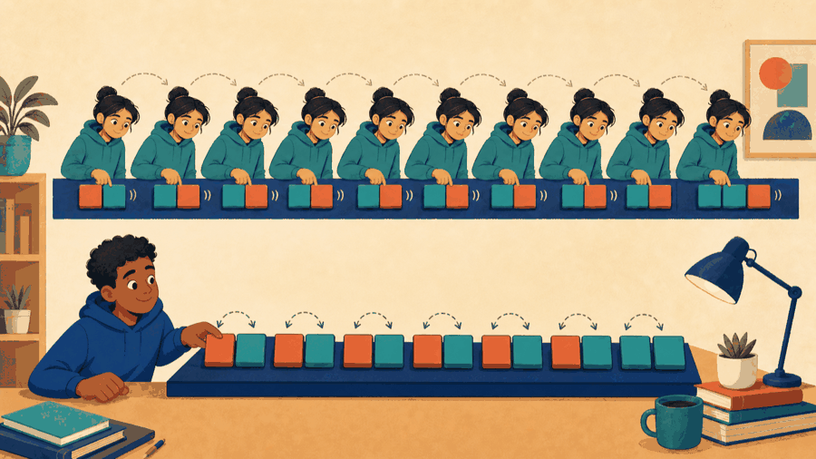

# Lecture 15: Choose structures from operations and cost ## Choose operations before representation **Instructor:** [Dr. Debasish Pattanayak](https://drdebmath.github.io)
## The structure supplies the ordering guarantee. · Dispatch print jobs with a queue FIFO order is a property of the queue structure; the scheduling algorithm simply consumes that interface. ~~~cpp #include <iostream> #include <queue> #include <string> int main() { std::queue<std::string> jobs; jobs.push("report.pdf"); jobs.push("diagram.png"); jobs.push("notes.txt"); while (!jobs.empty()) { std::cout << "Printing " << jobs.front() << std::endl; jobs.pop(); } } ~~~ **Takeaways** - The structure supplies the ordering guarantee. - The algorithm uses only front, push, and pop. - Choosing a structure simplifies the application.
## The general form of a stack, a queue, and a linear search ~~~cpp #include <stack> #include <queue> std::stack<T> <s>; <s>.push(<value>); <s>.top(); <s>.pop(); <s>.empty(); <s>.size(); std::queue<T> <q>; <q>.push(<value>); <q>.front(); <q>.pop(); <q>.empty(); <q>.size(); int <search>(const <T> <a>[], int <n>, const <T>& <target>) { for (int <i> = 0; <i> < <n>; ++<i>) if (<a>[<i>] == <target>) return <i>; return -1; // one agreed value meaning "absent" } ~~~ | Part | Meaning | | --- | --- | | <code>push</code> | Adds one element. Both containers grow at the end they own. | | <code>top</code> vs <code>front</code> | A stack exposes the most recent element, a queue the earliest. That difference is the whole abstraction. | | <code>pop</code> | Removes, and returns nothing. Read the element first, then pop it. | | <code>empty()</code> | Calling <code>top</code>, <code>front</code>, or <code>pop</code> on an empty container is undefined — test first. | | linear search | Needs no ordering, examines at most `<n>` elements, and is the baseline every faster search must beat. | Choose the structure from the ordering guarantee the problem needs, then let that choice decide which operations are cheap.
## An abstract data type specifies operations before representation A stack promises <code>push</code>, <code>pop</code>, and <code>top</code>. A queue promises <code>enqueue</code>, <code>dequeue</code>, and <code>front</code>. The contract does not require a class or one specific representation.
## Linear search is the trustworthy baseline when only traversal is known ~~~cpp std::vector<int> values{8, 3, 5, 3}; int target = 5; std::size_t found = values.size(); for (std::size_t i = 0; i < values.size() && found == values.size(); ++i) if (values[i] == target) found = i; ~~~ Worst case: inspect every element.
## What does the data structure look like? <figure class="course-meme-figure"> <figcaption> <p class="course-meme-setup"><strong>Setup</strong> The student asks what the data structure looks like.</p> <p class="course-meme-punchline"><strong>Punchline</strong> What it promises to do comes first; the costume can wait.</p> </figcaption> </figure>
## Bubble sort trades simplicity for quadratic time ~~~cpp for (std::size_t end = values.size(); end > 1; --end) { for (std::size_t i = 1; i < end; ++i) { if (values[i] < values[i - 1]) { int temporary = values[i]; values[i] = values[i - 1]; values[i - 1] = temporary; } } } ~~~
## A stack returns the most recently pushed item first With an array representation, keep one integer <code>top</code>: - push: check capacity, then advance and store; - pop: check emptiness, read, then retreat; - top: inspect without removing. An undo history and function calls are stack applications.
## The shelf is unsorted and gives no hints <figure class="course-meme-figure"> <figcaption> <p class="course-meme-setup"><strong>Setup</strong> The shelf is unsorted and the target refuses to give hints.</p> <p class="course-meme-punchline"><strong>Punchline</strong> Check each item — boring is a reliable baseline.</p> </figcaption> </figure>
## A queue returns the earliest enqueued item first A circular array keeps <code>front</code>, <code>rear</code>, and <code>count</code>. A linked queue keeps pointers to the first and last nodes. Print jobs and breadth-first exploration are queue applications.
## Game evolution: A queue orders cleaning work | Today's concept | Exact game part enabled | |---|---| | queue behavior on a linear structure | clean dirty cell IDs in first-discovered, first-served order | ~~~cpp #include <iostream> #include <vector> int main() { std::vector<int> pending{8,13,21}; std::size_t front=0; while (front<pending.size()) { int targetCell=pending[front]; ++front; std::cout << "clean " << targetCell << '\n'; } } ~~~ **Queue invariant:** indices below <code>front</code> are cleaned; indices from <code>front</code> onward are pending. **Next unlock · L16:** explore choices recursively and undo dead ends.
## Compare structures by operation costs, not names | Requirement | Useful choice | |---|---| | scan unsorted readings | array + linear search | | undo most recent action | stack | | serve arrival order | queue | | repeatedly exchange adjacent inversions | array + bubble sort |
## Every neighbor on the shelf has an opinion <figure class="course-meme-figure"> <p></p> <figcaption> <p class="course-meme-setup"><strong>Setup</strong> The list is almost sorted, except every neighbor disagrees with the one beside it.</p> <p class="course-meme-punchline"><strong>Punchline</strong> Only adjacent swaps, over and over — simple, patient, and quadratic.</p> </figcaption> </figure>
## Match operations, invariants, and cost before choosing a structure - An ADT is defined by valid operations and behavior. - Algorithms are applications of the representation's operations. - Linear search needs no ordering. - Stack means LIFO; queue means FIFO. - Bubble sort is simple but performs quadratic work.
## Verify Dispatch print jobs with a queue with a claim, trace, boundary, and improvement Use the practical example as a small experiment. Before you leave, make the reasoning visible: - **Claim:** The structure supplies the ordering guarantee. - **Trace:** name the state that changes and the observation that would confirm it. - **Boundary:** choose one smallest, largest, empty, or invalid input that could expose a defect. - **Improvement:** explain one change that would make the solution clearer or safer. ### Exit ticket Choose one problem to solve now and two to attempt in the lab: - Implement a stack using a fixed array and test overflow and underflow. - Implement a circular queue using an array. - Check balanced brackets using a stack.
## Explain Dispatch print jobs with a queue without opening the code Explain today’s idea to a partner without opening the code: 1. State the input, output, and one rule the solution must preserve. 2. Point to the operation that makes progress or changes the state. 3. Name the first test you would run after changing the implementation. If the explanation needs “and then another unrelated thing,” split the design before you code.
## Solve five problems to transfer Dispatch print jobs with a queue **IC151 lab practice · 5 problems** 1. Implement a stack using a fixed array and test overflow and underflow. 1. Implement a circular queue using an array. 1. Check balanced brackets using a stack. 1. Use linear search to find all overdue jobs in an array. 1. Sort student records by score using bubble sort and a comparator. Reaching this set marks the lecture as studied in this browser. [Open the IC151 lab setup and batch schedule](ic151.html).
## Remember pending dirty cells and service them in a deliberate order. **Studio thread:** Queue the cells that still need cleaning | Ask | Today’s answer | |---|---| | **Problem** | Remember pending dirty cells and service them in a deliberate order. | | **Model** | A stored target is waiting, active, or already cleaned. | | **Represent** | A vector plus a front index acts as a FIFO queue; an array can act as a stack. | | **Solve** | Scan once to collect dirty indices, then process them in stored order. | | **Verify** | Test no dirt, one target, repeated targets, and full capacity. | | **Improve** | Compare FIFO, LIFO, and direct linear search from the operations each needs. | **Technique lens:** linear structures, search, and elementary sorting **Compare:** FIFO service order versus LIFO service order